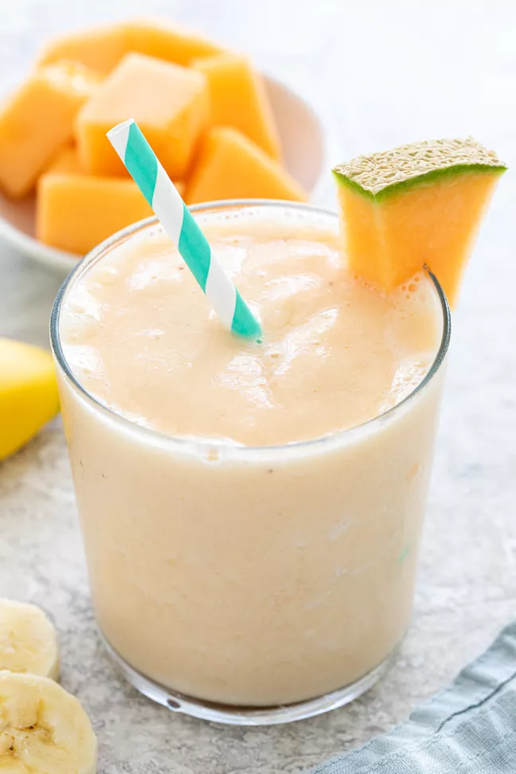

Cantaloupe Smoothie

If you’re looking for what to make with leftover cantaloupe, or just want
a refreshing summer treat, then this smoothie recipe is definitely for
you!
Ingredients
- Frozen Cantaloupe or Fresh Ripe Cantaloupe
- Frozen Banana
- Milk
- Yogurt
- Ice Cubbes
Steps to make Cantaloupe Smoothie
-
Add cantaloupe melon, frozen banana, milk, yogurt, and ice to the
blender.
- Blend until serve.
- Add toppings (optional) and enjoy!
Return Home